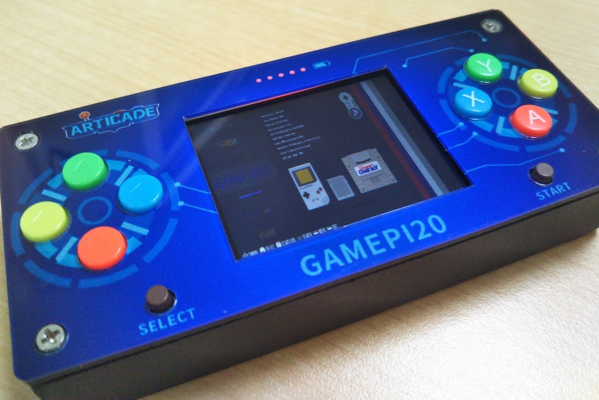
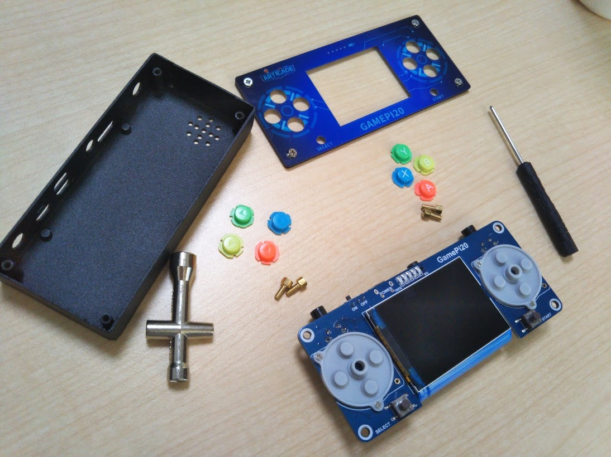
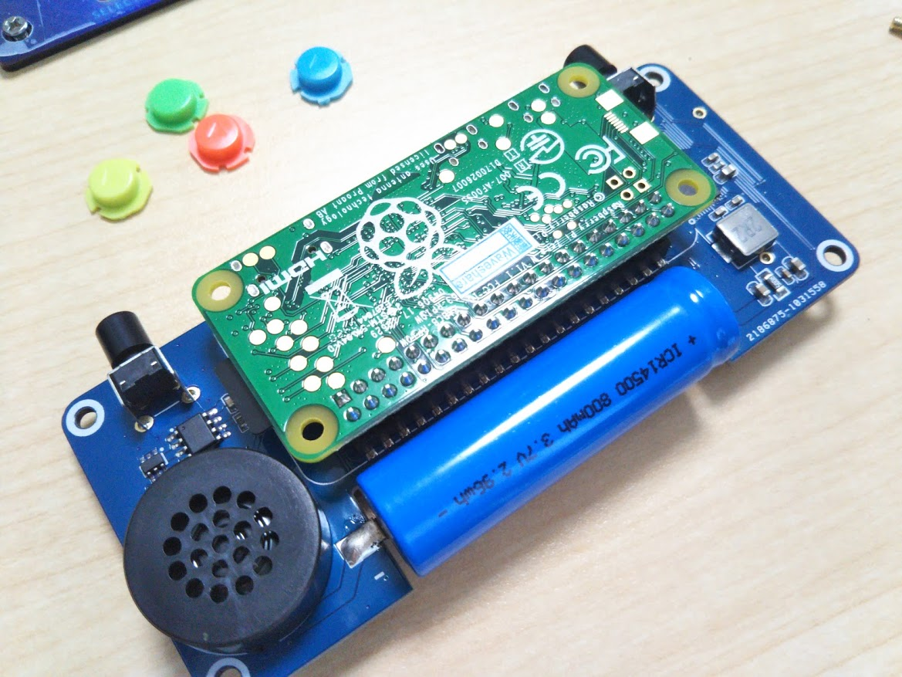
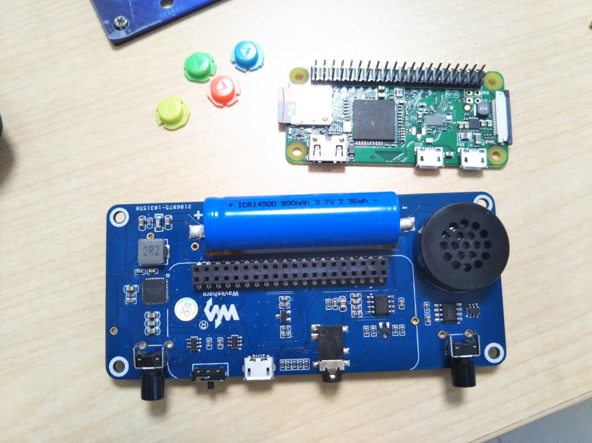
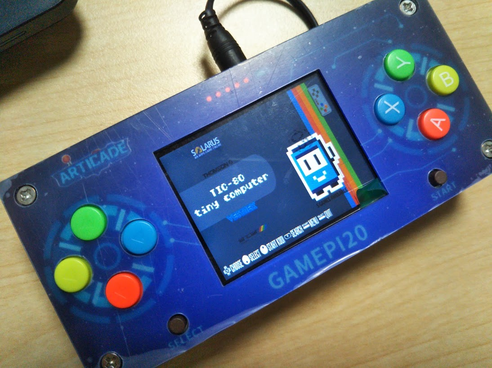

Raspberry Pi を内蔵したポータブルゲーム機 GamePi20（クーポンあり！）
Mon, Dec 28, 2020
Read in 1 minutes
RaspberryPiZeroを内蔵したポータブルゲーム機である GamePi20の紹介と、お得に購入できるクーポンの紹介です。

この記事はBanggoodの提供でお届けします。
以前紹介したようにこのブログはBanggoodと提携させていただいており、今回紹介するGamePi20はBanggoodからいただいたものとなります。
（GamePi20のレビューがしたい！と言ったのは自分なので、Banggoodが無理やりGamePi20を押しているわけではなく、inajobの一押しアイテム！、という感じです。）
さらに・・あとで紹介しますが、「ちょっと他より高いんじゃない？」と相談したところ、2021/01/31まで利用できるクーポンをいただくことが出来たので、この機会にBanggoodでお得にGamePi20を購入してみるのも良いのではないでしょうか？
GamePi20の特徴・仕様
このブログでも多くのRaspberryPiを搭載したポータブルゲーム機の作例を紹介してきましたが、GamePi20もそういったものの一つです。
開発元はWaveShareというRaspberryPiやArduino向けの液晶ディスプレイモジュールなどを作っている会社です。

- 2インチの320x240 ディスプレイ
- 14500リチウムバッテリー（800mAh）
- 十字キー＋4ボタン+スタート・セレクトボタン・L/Rボタン
- Raspberry Pi Zero
という、ゲームをするには十分な構成です。
自分でも同じようなものを作ろうとしたことがあるのですが、なかなかここまでのサイズに仕上げることは難しく、ゲーム機開発者としても、非常に参考になる製品です。
外観
(この製品は組み立て済みですが、ここではあえて分解して内部を紹介しています。分解のための工具も製品に同梱されているので、誰でも分解できます。)
筐体はアクリル製のフロントパネルと、金属製のボディにより構成されています。 フロントパネルにそれっぽい印刷がされていますが、このセンスは日本人にはちょっと合わないかもしれません・・、一方金属製のボディはしっかりとした作りで、個人で作る事は難しそうな、製品ならではの安定感のあるものとなっています。

十字キーと4ボタンは、普通のゲームコントローラのようにラバードーム式のスイッチになっており、使用感はとても良いです。一方スタート・セレクトボタンとL/Rボタンはいわゆる普通の中国製の硬めのタクトスイッチなので、違和感を覚える人も多そうです。
内部基板
ケースの中にはRaspberry Pi Zeroと、それをマウントするメインボードが入っています。 このメインボードは、ゲーム機の自作を試みたことがある人には、非常に参考になる作りとなっています。
Raspberry Pi Zeroとはロープロファイルのピンソケットで接続されており、充電用IC、オーディオアンプ、バッテリー、イヤホンジャック、電源スイッチ、と必要十分な部品が無理なく配置されています。

バッテリーは14500サイズで、800mAhのものが搭載されてています。
バッテリーは基板に直接はんだ付けしてあり、スペース節約のために、基板が凹状にカットされています。

ソフトウェア
付属のSDカードは16GBで、あらかじめRecalboxというLinuxベースのゲームエミュレータ専用OSが書き込んでありました。 普通に遊ぶ分にはこれをそのまま使えば良いと思います。
尚 エミュレータで遊ぶための各ゲームのROMファイルは、正しい方法で入手しないと 日本では違法となってしまうため、注意が必要です。
付属のSDカードのRecalboxはバージョンが6.0と古いもので、また謎のROMファイルも入っていたため、自分はまっさらなSDカードに自分で最新のRecalboxをインストールして遊んでいます。(この方法については別記事にまとめました！）
Recalbox
Recalboxはゲームエミュレータ専用のLunuxベースのOSで、よく似たものとしてはRetroPieが挙げられます。 実際のところGamePi20は、RecalboxもRetroPieもどちらも動かすことが出来るようです。(自分はRecalboxしか試していないですが・・）
このRecalbox。非常によくできていて、様々なレトロゲーム機のエミュレータが搭載されていることはもちろん、Sambaでのファイル共有や、Web経由での設定変更などもできます。
という事で、Recalboxを起動しWiFiの設定を行うだけで、後は手元のPCからSamba経由でROMファイルを本体に転送し、ゲームで遊ぶことが出来ます。
性能
まぁRaspberryPi Zeroがそこそこの性能なので、ゲームによってはもたつくものもあります。 またバッテリーは満充電で遊び始めると大体2時間ほど持つ印象です。 このようにちょっと限定されたスペックなのでがっつりゲームで遊びたい！という人にはちょっと向いていないかもしれませんが、携帯できるバッテリー付きのLinux端末として考えると、かなり遊びの幅が広がりそうです。
こんな使い方が面白そう
このGamePi20ですが、ゲームエミュレータとして遊ぶ以外にも様々な使い方が出来そうです。
- HDMIポートがあるので、持ち運べるプレゼンテーションマシンとして使う
- 最新のRecalboxでTIC-80というFantasyConsoleを動作させ、遊ぶ（別の記事にまとめました）
- Webサーバやファイルサーバを実行しモバイルLinuxサーバとして使う
などなど、ゲームエミュレータ機としてより、むしろそれ以外の使い方のほうが面白そうに感じます。

ゲームエミュレータとしても遊べるし、飽きたら持ち運べる汎用Linuxマシンとしても利用できる、この「GamePi20」。玄人向きだとは思いますが、個人的には「買い」のアイテムだと思いました。
クーポンコード！
さて、ここまで紹介してきたGamePi20ですが、Banggoodでは**$76.44**で販売されています。この記事を書くにあたり、私もほかのECサイトなどで値段をざっと見たところ、正直言って少し高い価格設定でした。 まぁ、Banggoodは配送も比較的早いし、Paypalで支払えるなど、良いところもたくさんあるので、多少高いのは仕方がないかな・・？と思いつつ、恐る恐る「ちょっと人に勧めるには高すぎません？・・」と聞いてみたところ、このブログのために**$54.99**へ値下げできるクーポンコードを頂きました！！！
コード: BGJPrg281
GamePi20をカートに入れ、チェックアウト後にこのクーポンコードを入力することで割引を受けることが出来ます。
有効期限は2021/01/31なので、買いたい方はお早めにどうぞ！（加えて、在庫に限りがあると思うので早めに！）
（ここから買ってもらえると、自分もまたBanggoodの面白い製品をレビューできるので！このブログを応援していただける方もぜひ！買って応援してください！）